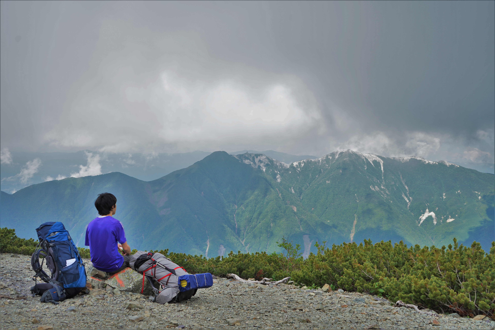
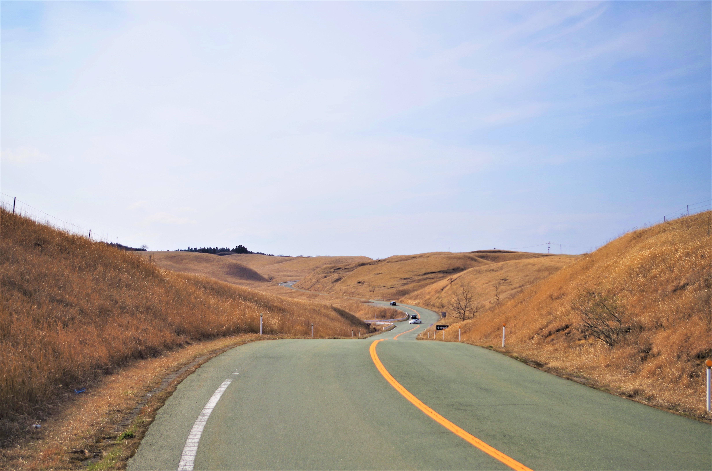
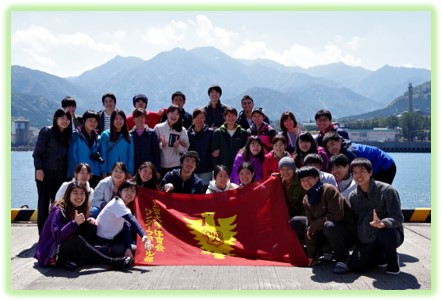
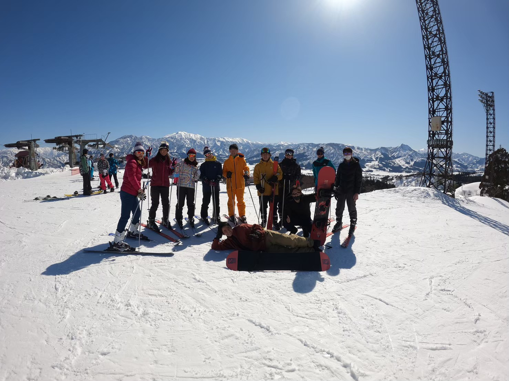
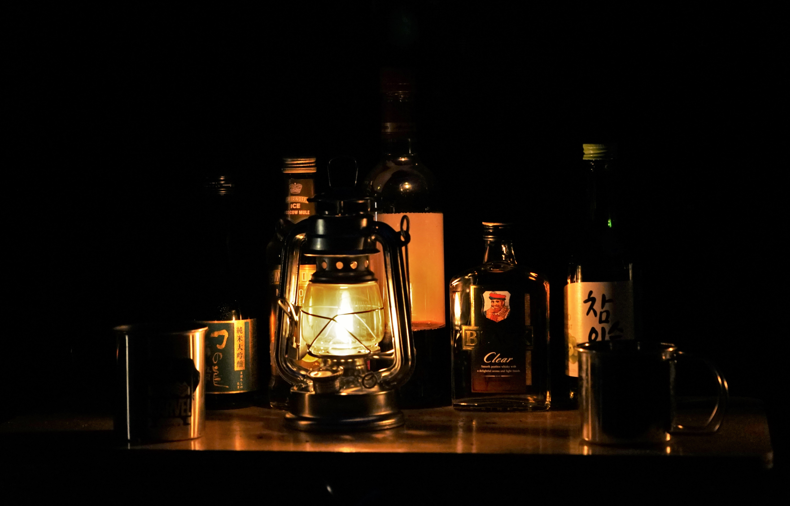
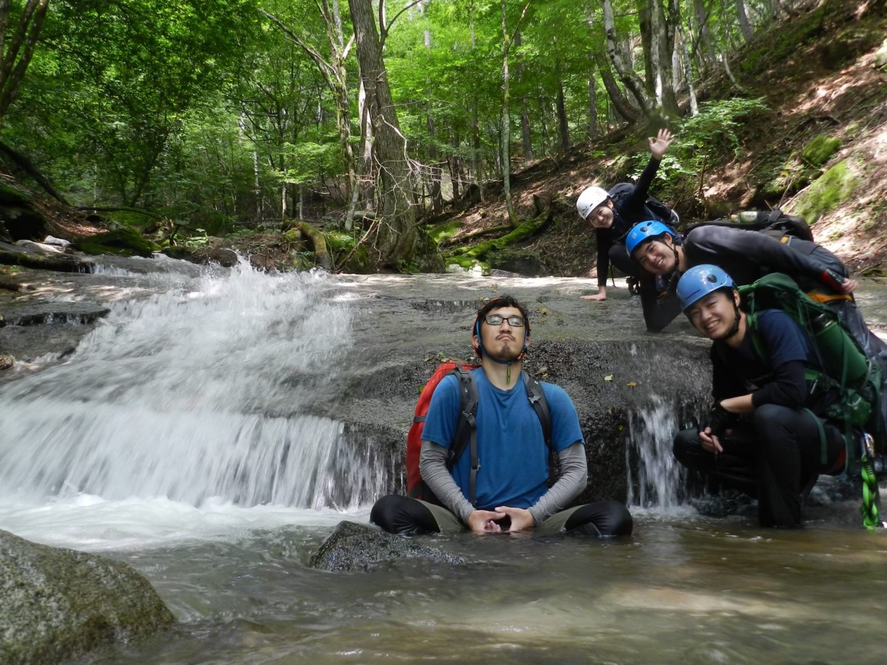

活動内容
「ワンダーフォーゲル」とは
そもそもワンダーフォーゲルは、ドイツ語でwander(渡る)＋vogel(鳥)の「渡り鳥」を意味します。
昔20世紀初めドイツの高校生や大学生たちは、都会を離れて山野を徒歩旅行していました。大自然の中で自主的な生活を営み、心身を鍛え、仲間と語りあい、互いに信頼を深めていきます。そして渡り鳥のように様々な場所を訪れていきます。
このような仲間と自然の中で生活し、語り合うことがモットーの野外活動のことをワンダーフォーゲルと呼ばれるようになりました。
上智ワンゲルの活動

上智のワンゲルの主な活動は、登山・サイクリング・スキー・キャンプ・離島遠征です。
他にも希望者のみが沢登りや雪山も行いますが、危険が伴い上記よりさらにスキル・経験が必要です。２つについてはOBがコーチとなった研究会があり、そこに所属し勉強会や講習を受け必要な知識をつけることで安全に活動ができるようになっています。
それぞれの詳しい活動内容です。
登山
上智ワンダーフォーゲル部のメインとなる活動。
ワンダーフォーゲルの意味通り、日常にはない大自然の中を歩きます。
圧倒的解放感の中味わう、景色・満点の星空・山ご飯は一生忘れることのできない貴重な経験・感動になります。シカやサル、たまにライチョウなど野生動物にも面白いくらいよく出会い、意外な気付きがあるかもしれません。
何より下山後に入る温泉は極上の気持ち良さ。
仲間と苦労して登った後の絶景や達成感、絆は今後、心に残り続けます。
サイクリング
しまなみ海道など日本の各地を自転車で駆け抜けます。
登山とは違う疾走感があり、海風や温泉の硫黄の匂い、日本の蒸し暑さなど五感をフルに使って、すべてを楽しめます。
自転車は進むスピードも速いので、いろいろな場所を巡り、体験、地の食材を味わうことができます。
ふと入った脇道に意外な発見があるかも！？
離島遠征
春休み、まだ高山にも登れず結構寒い。
そんなときは暖かいところに行けばいい。
長期休みを利用して、1週間ほど小笠原諸島や奄美・沖縄諸島に訪れます。
その地ならではの自然、アクティビティを楽しみ、仲間と濃厚な時間を過ごすことができます。
スキー
雪が降り、山にもサイクリングにも行けないそんな冬。
白銀のゲレンデを2本の板に乗って滑走します。スキーやスノボでわいわい楽しくやっています。
キャンプ
秋～冬にかけてみんなでのんびりキャンプを行います。
普段山で鍛えられたテントの張り方、山ご飯、ロープワークの経験を駆使したキャンプは、無駄にクオリティが高くなっています。
沢登り・雪山研究会
沢登り研究会(SWVSCC)は、体育会ワンダーフォーゲル部内設置の団体です。部の更なる発展を目標に活動中。
'20シーズンより、沢研はOB所管となります。学生主導の研究活動は、休止を予定しています。